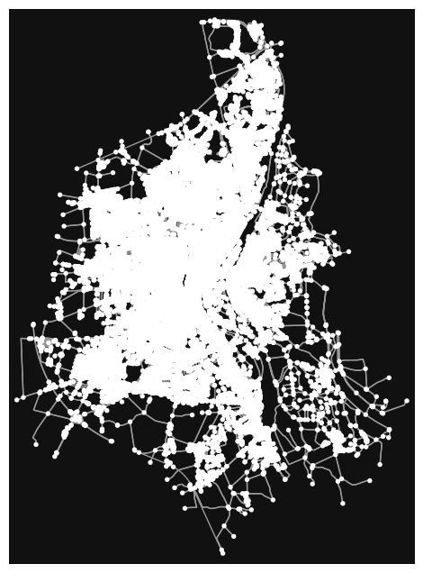

Fetching Data for Cycling Quality Index#
This is a script to fetch the needed data with osmnx to calculate the Cycling Quality Index.
import osmnx as ox
import pyproj # we need this for jupyter-book to build right
from pathlib import Path
import requests
import geopandas as gpd
from shapely.geometry import Point, LineString
from pathlib import Path
import json
from helpers import configreader as cfr
from helpers import osmhelper as oh
# ox.settings.overpass_url = "http://192.168.0.8:7890/api/"
ox.settings.overpass_rate_limit = False
ox.settings.log_console = True
ox.settings.useful_tags_way += [
'highway', 'name', 'oneway', 'oneway:bicycle', 'segregated', 'tracktype',
'is_sidepath', 'is_sidepath:of', 'priority_road', 'access', 'vehicle',
'motor_vehicle', 'bicycle', 'foot', 'bicycle_road', 'footway', 'path',
'bridleway', 'informal', 'maxspeed', 'lit', 'incline', 'surface', 'surface:bicycle',
'smoothness', 'smoothness:bicycle', 'lanes', 'width', 'width:carriageway',
'width:effective', 'width:lanes', 'width:lanes:forward', 'width:lanes:backward',
'lane_markings', 'separation', 'separation:both', 'separation:left', 'separation:right',
'buffer', 'buffer:both', 'buffer:left', 'buffer:right', 'traffic_mode:both',
'traffic_mode:left', 'traffic_mode:right', 'surface:colour', 'traffic_sign',
'parking:both', 'parking:left', 'parking:right', 'parking:both:orientation',
'parking:left:orientation', 'parking:right:orientation', 'parking:both:width',
'parking:left:width', 'parking:right:width', 'sidewalk:bicycle', 'sidewalk:both:bicycle',
'sidewalk:left:bicycle', 'sidewalk:right:bicycle', 'sidewalk:surface', 'sidewalk:both:surface',
'sidewalk:left:surface', 'sidewalk:right:surface', 'sidewalk:smoothness', 'sidewalk:both:smoothness',
'sidewalk:left:smoothness', 'sidewalk:right:smoothness', 'sidewalk:width', 'sidewalk:both:width',
'sidewalk:left:width', 'sidewalk:right:width', 'sidewalk:oneway', 'sidewalk:both:oneway',
'sidewalk:left:oneway', 'sidewalk:right:oneway', 'sidewalk:oneway:bicycle',
'sidewalk:both:oneway:bicycle', 'sidewalk:left:oneway:bicycle', 'sidewalk:right:oneway:bicycle',
'sidewalk:traffic_sign', 'sidewalk:both:traffic_sign', 'sidewalk:left:traffic_sign',
'sidewalk:right:traffic_sign', 'footway:width', 'cycleway', 'cycleway:both', 'cycleway:left',
'cycleway:right', 'cycleway:lane', 'cycleway:both:lane', 'cycleway:left:lane', 'cycleway:right:lane',
'cycleway:surface', 'cycleway:both:surface', 'cycleway:left:surface', 'cycleway:right:surface',
'cycleway:smoothness', 'cycleway:both:smoothness', 'cycleway:left:smoothness',
'cycleway:right:smoothness', 'cycleway:width', 'cycleway:both:width', 'cycleway:left:width',
'cycleway:right:width', 'cycleway:oneway', 'cycleway:both:oneway', 'cycleway:left:oneway',
'cycleway:right:oneway', 'cycleway:oneway:bicycle', 'cycleway:both:oneway:bicycle',
'cycleway:left:oneway:bicycle', 'cycleway:right:oneway:bicycle', 'cycleway:segregated',
'cycleway:both:segregated', 'cycleway:left:segregated', 'cycleway:right:segregated', 'cycleway:foot',
'cycleway:both:foot', 'cycleway:left:foot', 'cycleway:right:foot', 'cycleway:separation',
'cycleway:separation:left', 'cycleway:separation:right', 'cycleway:separation:both',
'cycleway:both:separation', 'cycleway:both:separation:left', 'cycleway:both:separation:right',
'cycleway:both:separation:both', 'cycleway:right:separation', 'cycleway:right:separation:left',
'cycleway:right:separation:right', 'cycleway:right:separation:both', 'cycleway:left:separation',
'cycleway:left:separation:left', 'cycleway:left:separation:right', 'cycleway:left:separation:both',
'cycleway:buffer', 'cycleway:buffer:left', 'cycleway:buffer:right', 'cycleway:buffer:both',
'cycleway:both:buffer', 'cycleway:both:buffer:left', 'cycleway:both:buffer:right',
'cycleway:both:buffer:both', 'cycleway:right:buffer', 'cycleway:right:buffer:left',
'cycleway:right:buffer:right', 'cycleway:right:buffer:both', 'cycleway:left:buffer',
'cycleway:left:buffer:left', 'cycleway:left:buffer:right', 'cycleway:left:buffer:both',
'cycleway:traffic_mode:left', 'cycleway:traffic_mode:right', 'cycleway:traffic_mode:both',
'cycleway:both:traffic_mode:left', 'cycleway:both:traffic_mode:right', 'cycleway:both:traffic_mode:both',
'cycleway:left:traffic_mode:left', 'cycleway:left:traffic_mode:right', 'cycleway:left:traffic_mode:both',
'cycleway:right:traffic_mode:left', 'cycleway:right:traffic_mode:right', 'cycleway:right:traffic_mode:both',
'cycleway:surface:colour', 'cycleway:both:surface:colour', 'cycleway:right:surface:colour',
'cycleway:left:surface:colour', 'cycleway:traffic_sign', 'cycleway:both:traffic_sign',
'cycleway:left:traffic_sign', 'cycleway:right:traffic_sign', 'cycleway:lanes', 'cycleway:lanes:forward',
'cycleway:lanes:backward', 'vehicle:lanes', 'bus:lanes', 'psv:lanes', 'crossing', 'crossing:markings', 'service', 'cycleway', 'sidewalk', 'parking'
]
def test_overpass_api(url):
try:
response = requests.get(url)
response.raise_for_status() # Raise an error for HTTP codes 4xx/5xx
try:
data = response.json() # Try to parse JSON
print("API response is valid JSON.")
return data
except ValueError:
print("Response content is not valid JSON.")
print("Response content:", response.text)
except requests.exceptions.HTTPError as http_err:
print(f"HTTP error occurred: {http_err}") # e.g., 403 Forbidden
except Exception as err:
print(f"Other error occurred: {err}")
# Test the Overpass API URL
test_overpass_api(
"http://192.168.0.8:7890/api/interpreter?data=%5Bout:json%5D;node(1966391124);out;")
Other error occurred: HTTPConnectionPool(host='192.168.0.8', port=7890): Max retries exceeded with url: /api/interpreter?data=%5Bout:json%5D;node(1966391124);out; (Caused by NewConnectionError('<urllib3.connection.HTTPConnection object at 0x00000244162F5AC0>: Failed to establish a new connection: [WinError 10061] Es konnte keine Verbindung hergestellt werden, da der Zielcomputer die Verbindung verweigerte'))
# Define the bounding box coordinates
# north, south, east, west = 52.5009195009107046, 52.4543246009110788, 13.4859782, 13.3924347464750326
place = 'Magdeburg, Germany'
# # Use osmnx to get the graph
# try:
# G = ox.graph_from_bbox((north, south, east, west), network_type='all')
# # Plot the graph
# ox.plot_graph(G)
# except Exception as e:
# print(f"Error: {e}")
# raise e
# # Define the custom filters for the query
# custom_filter = (
# '["highway"~"cycleway|path|footway|bridleway|steps|motorway|motorway_link|trunk|trunk_link|primary|'
# 'primary_link|secondary|secondary_link|tertiary|tertiary_link|unclassified|residential|living_street|'
# 'pedestrian|road|service|track"]'
# # '["bicycle"!~"no|dismount"]'
# # '["service"!~""]'
# # '["service"~"alley|yes|designated|permissive"]'
# )
# # Fetch the data
# G = ox.graph_from_bbox((north, south, east, west),
# custom_filter=custom_filter, network_type='all')
# # Plot the graph
# ox.plot_graph(ox.project_graph(G))
G = ox.graph_from_place(place, network_type='all',
simplify=True, truncate_by_edge=True)
nodes, edges = ox.graph_to_gdfs(G, nodes=True, edges=True)
edges = edges.dropna(axis=1, how='all')
# edges.head(2)
ox.plot_graph(G)

(<Figure size 800x800 with 1 Axes>, <Axes: >)
# Convert edges to GeoDataFrame with geometry as LineString
def make_linestring(row):
try:
return LineString([nodes.loc[row['u'], 'geometry'], nodes.loc[row['v'], 'geometry']])
except KeyError:
return None
nodes['geometry'] = nodes.apply(lambda row: Point(row['x'], row['y']), axis=1)
# Ensure 'u' and 'v' columns are accessible
edges.reset_index(inplace=True)
edges['geometry'] = edges.apply(make_linestring, axis=1)
edges = edges.dropna(subset=['geometry'])
# Convert list-type columns to strings or remove them
for column in edges.columns:
if edges[column].dtype == object and any(isinstance(val, list) for val in edges[column]):
edges[column] = edges[column].apply(lambda x: ', '.join(
map(str, x)) if isinstance(x, list) else x)
# save_path = Path("out", place + ".geojson")
# with open(save_path, "w") as f:
# f.write(edges.to_json(na="drop"))